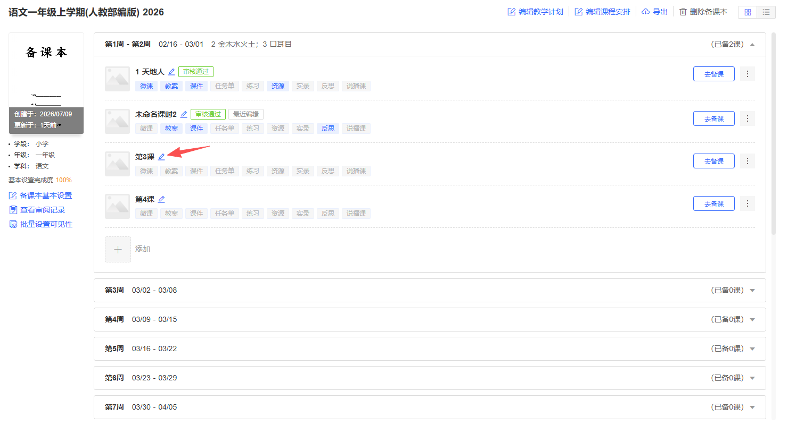
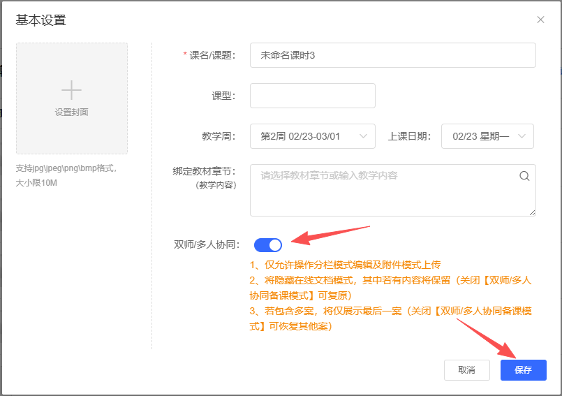
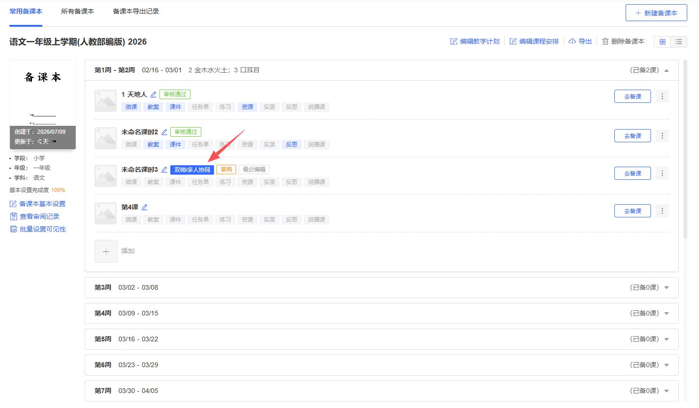
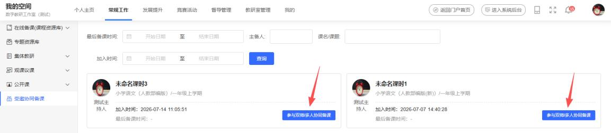
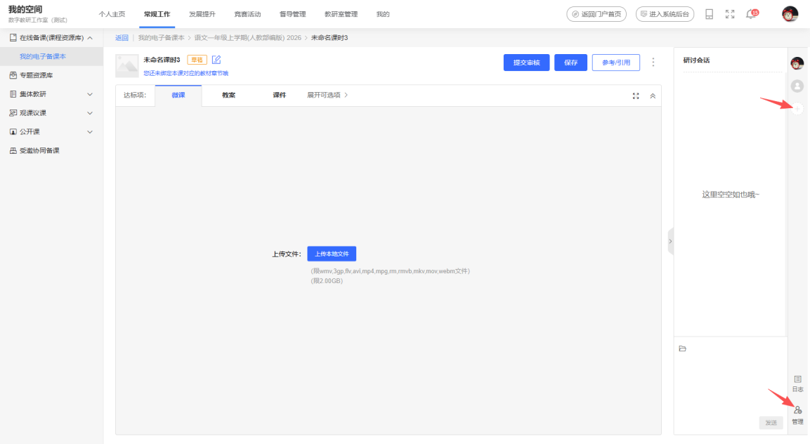
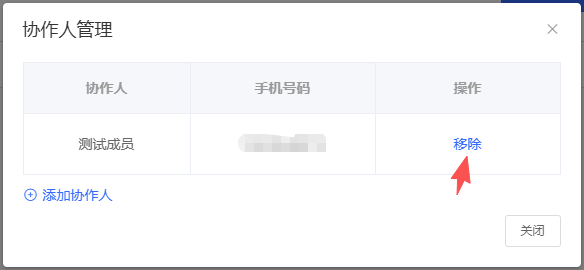
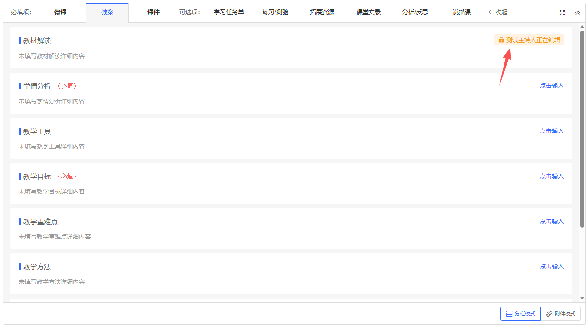
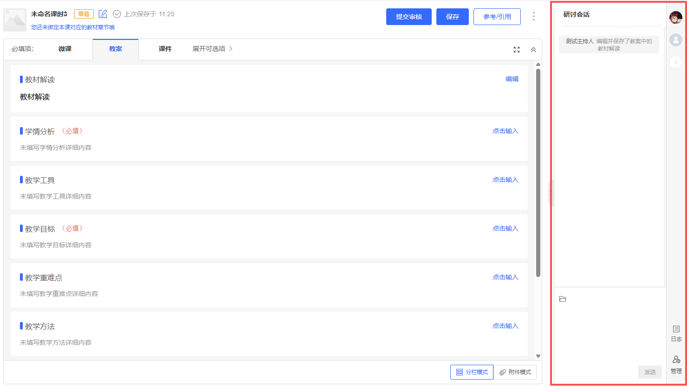
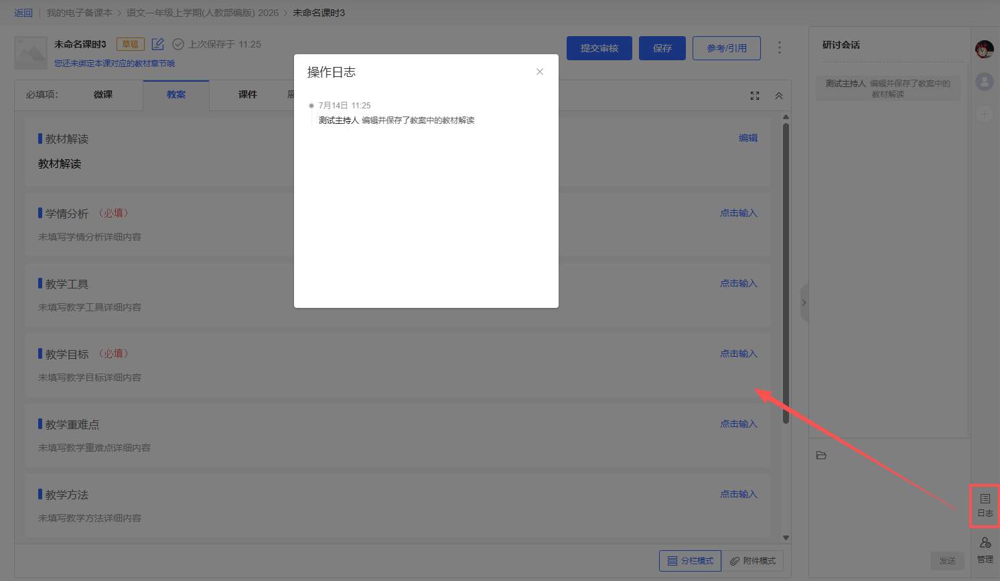

1. 开启与关闭协同备课
在备课本中，选择一个需要协同备课的课时，在编辑基本信息的弹窗中开启协同备课模式。


注意：关闭协同备课需要先将所有协作人移除，再将协同备课的开关关闭即可。
2. 进入协同备课
主备人可以在备课本中，点击标记有“双师/多人协同”的课时进入协同备课。

所有参与者都可以从“受邀协同备课”中查找并点击进入。

3. 添加与移除协作人
主备人进入协同备课后，需要添加协作人。协作人最多可以添加5 人。

点击“管理”移除已添加的协作人。协作人被移出协同备课后，不能再参与该课时的协同备课，但之前的协作记录将会保留。

4. 与协作人一起备课
在协同备课中，主备人仍然可以通过参考/引用来完成整套课程资源的初稿，同时也只有主备人可以清空/删除，以及设置教学设计的可见性。此外，分析/反思只能由主备人编辑。
教案、学习任务单：
开启协同备课的教学设计，将隐藏在线文档编辑模式，原有的在线文档内容会保留，关闭协同备课后将恢复。
在分栏模式下，各协作人可以自由对教案、学习任务单的各个栏目进行编辑。当A协作人正要编辑某一个栏目时，其他协作人将看到这个栏目处于“xxx 正在编辑”并隐藏编辑操作按钮，等A协作人完成编辑并保存后，锁定状态将释放并恢复编辑按钮，其他协作人可继续编辑。

在附件模式下，各协作人上传的文件会按时间顺序覆盖，仅保留最新的一份文件。
课件、课堂实录：
各协作人上传的文件会按时间顺序覆盖，仅保留最新的一份文件。
微课、练习/测验、拓展资源、说课：
支持多文件上传，各协作人均可以各自上传文件。
5. 备课时的研讨
主备人与协作人在协同备课中，编辑课程资源的同时，在右侧的研讨会话区域，可以自由发表研讨内容。

发表研讨还支持图片、文件发送。点击已发送的图片和文件，或以打开大图浏览或下载文件到本地电脑。右键点击已发送的消息，可以进行引用回复；在2分钟内还支持撤回操作。
6. 查看协作日志
协作人对教学设计的每一次内容编辑保存，或每一次文件上传，都会产生操作记录。操作记录除了在完成操作时实时显示在右侧的研讨会话中，还可以点击“日志”查看所有操作日志。所有协作人均可以查看操作日志。
